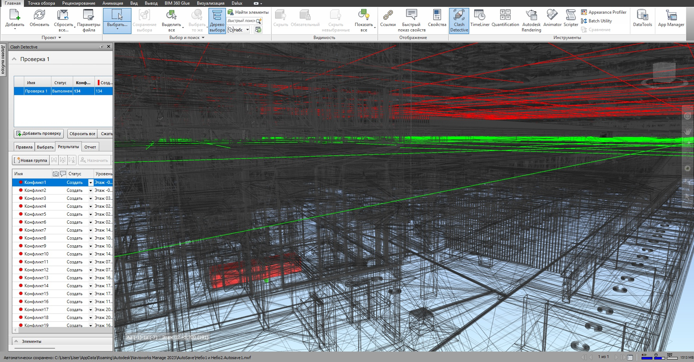
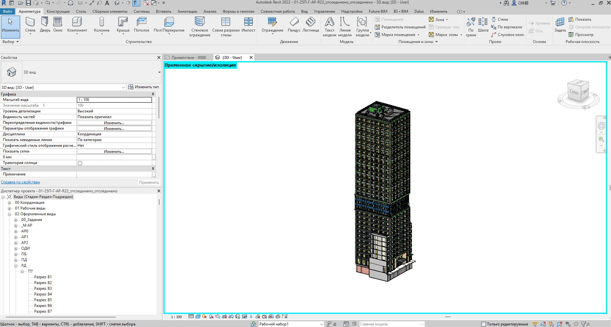

BIM-аудит
Проверка текущих моделей, шаблонов, параметров, коллизий и слабых мест BIM-процесса.
BIM Pulse Ufa — внедрение BIM, координация проектов, Revit-шаблоны, Dynamo-автоматизация и цифровое строительство.
Услуги
Фокус на том, что реально помогает проекту: стандарты, качество модели, автоматизация и контроль данных.
Проверка текущих моделей, шаблонов, параметров, коллизий и слабых мест BIM-процесса.
Виды, спецификации, листы, семейства, общие параметры и структура проекта.
Скрипты для автоматизации рутины: параметры, маркировка, ведомости, экспорт и проверки.
Navisworks, clash detection, отчёты, контроль пересечений и подготовка к стройке.
Кейсы
Проверка коллизий, структура файлов, ведомости, параметры, регулярные отчёты для команды.

Dynamo-процессы для заполнения параметров, контроля данных и подготовки спецификаций.

Правила моделирования, шаблоны Revit, структура выдачи и понятный процесс для команды.
BIM News Engine
Динамическая лента BIM Pulse Ufa: новости, практические советы, Revit/Dynamo, координация и цифровое строительство.
Лента обновляется из файла news.json.
Контакт
Напишите в Telegram. Разберём текущий процесс, определим слабые места и предложим понятный следующий шаг.